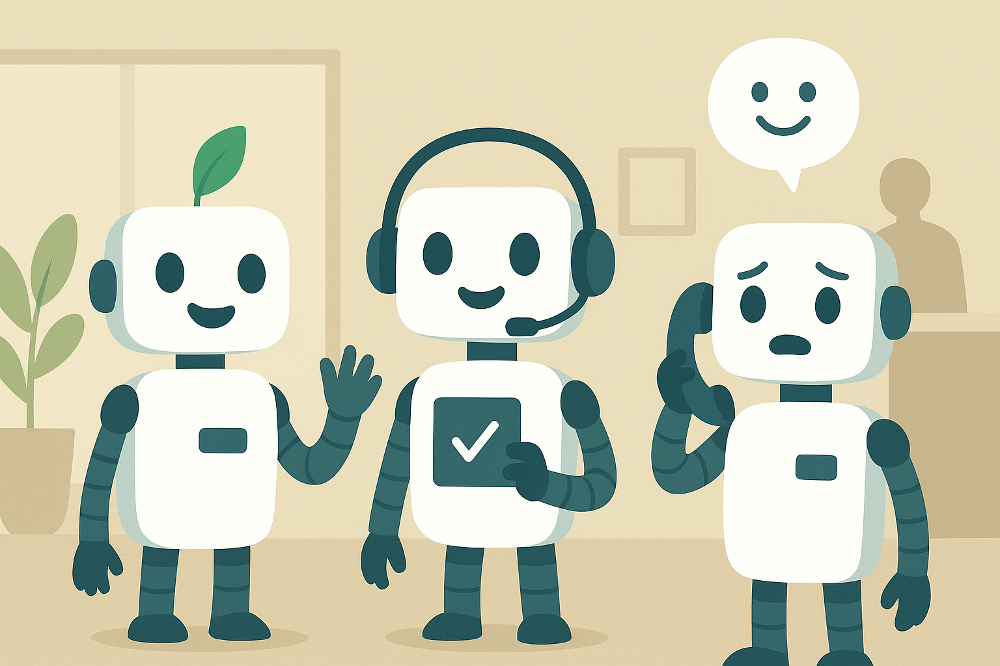

Contato
Serviços EcoBots
Para Serviços de Atendimento ao Cliente (inclusive, para abertura de chamados técnicos), utilize o telefone 0800 XXX XXXX ou o WhatsApp 11 93004-1548. Se você ainda não é nosso cliente, utilize os mesmos canais, sua solicitação será encaminhada ao setor responsável.

Ouvidoria
A Ouvidoria é um canal exclusivo e imparcial para analisar e solucionar demandas que não foram resolvidas via atendimento SAC. Ela é conduzida pela nossa equipe de relacionamento ao cliente, que está pronta para ajudar.
Para registrar sua manifestação, tenha em mãos o número do protocolo que foi informado no momento da ligação em nosso Contact Center. Caso ainda não tenha aberto um protocolo SAC, por favor, utilize o telefone 0800 055 1918 ou o WhatsApp 11 93332-8527 – opção 4.
Nosso compromisso é buscar as melhores soluções e assegurar que a sua experiência seja positiva.